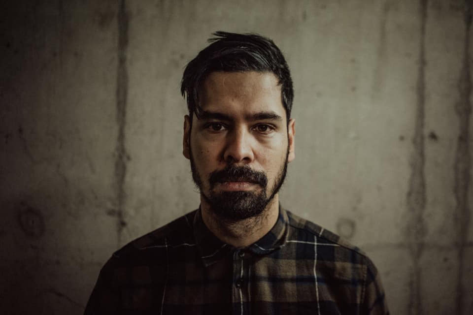

Joe-Al
Cinematographer & Director specializing in narrative, commercial, and documentary films.
Portfolio
A selection of my recent work across various genres. My focus is on creating dynamic, story-driven visuals that capture the essence of each project.
Narrative
Echoes of the Void
My Role: Director of Photography
Client: Independent Film
Summary: A sci-fi short film exploring loneliness in a futuristic world.
The Last Light
My Role: Director
Client: Moonstone Productions
Summary: A dramatic piece about a lighthouse keeper's final night on the job.
Commercials
Urban Flow
My Role: Director of Photography
Client: Nexus Wear
Summary: A high-energy commercial showcasing a new line of athletic apparel.
Music Videos
"Starlight" - The Solars
My Role: Director & Cinematographer
Client: Indie Records
Summary: A dream-like visual for a psychedelic rock band's single.
About Me
I'm Joe-Al, a passionate filmmaker with over 10 years of experience behind the camera and in the director's chair. My journey began in documentary filmmaking, which instilled in me a deep appreciation for authentic storytelling and capturing genuine human emotion. I believe that a great image is not just a pretty picture, but a powerful tool that serves the narrative. I'm proficient with a wide range of cameras and lighting equipment, and I'm always looking for new challenges to push my creative boundaries.
Resume/CV: Download PDF
Services
-
Cinematography
Collaborating with directors to design and execute the visual style of a project, including lighting, camera movement, and shot composition.
-
Directing
Leading the creative vision, from script development and casting to on-set performance guidance and post-production oversight.
-
Editing
Using industry-standard software to assemble and refine footage, creating a final product that is both cohesive and compelling.
Contact
Ready to collaborate on your next project? Let's talk.
Testimonials
"Joe-Al's work on our last commercial was outstanding. The visuals were stunning and perfectly captured the essence of our brand."
"A true professional with an incredible eye for detail. The atmosphere he created on set was fantastic."